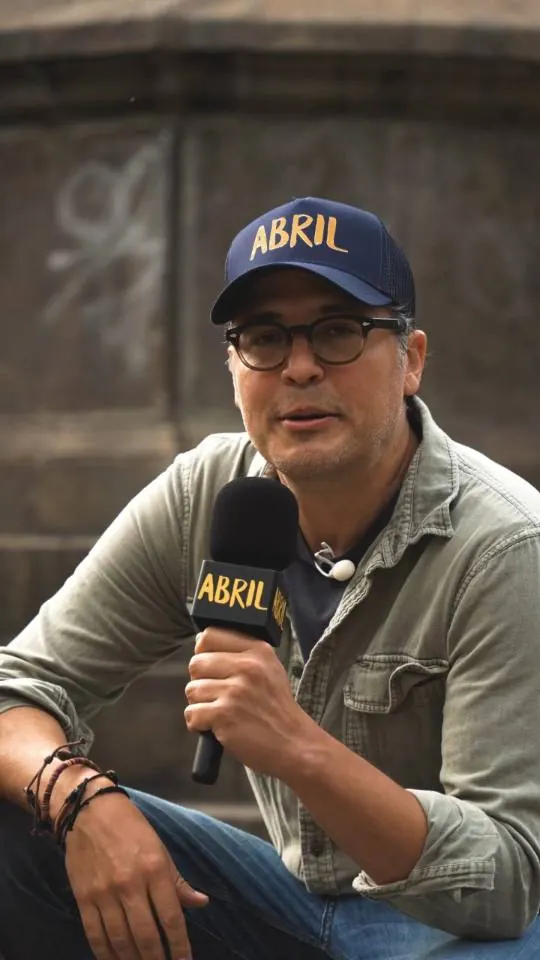
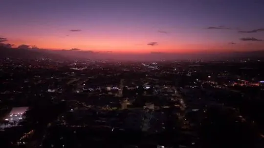
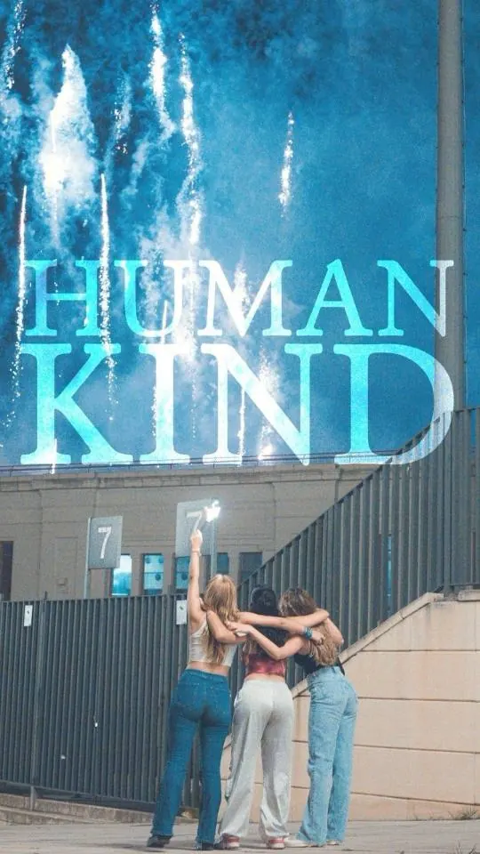

Cine & video
Series, películas, cortos, videoclips y reels.



Serie de viajes creada, escrita y dirigida por Jose Pablo García.
Banda sonora
Banda sonora · Temporada 2
Desde Arriba · Temporada 1
La Mitad de lo que Soy · Temporada 1
Ópera prima de Hernán Jiménez.
Con Marko Fonseca y Melania Fernández. Codirección con Diego van der Laat, quien firma historia y música.
Lo que precede y sirve de entrada, preparación o principio de algo.
Video oficial de Patiño.
Video promocional de danza.
Segunda unidad de fotografía para la película de Hernán Jiménez, y reels para su lanzamiento en redes.
Un instante.
Voz de Adriana Álvarez. Moravia, San José.